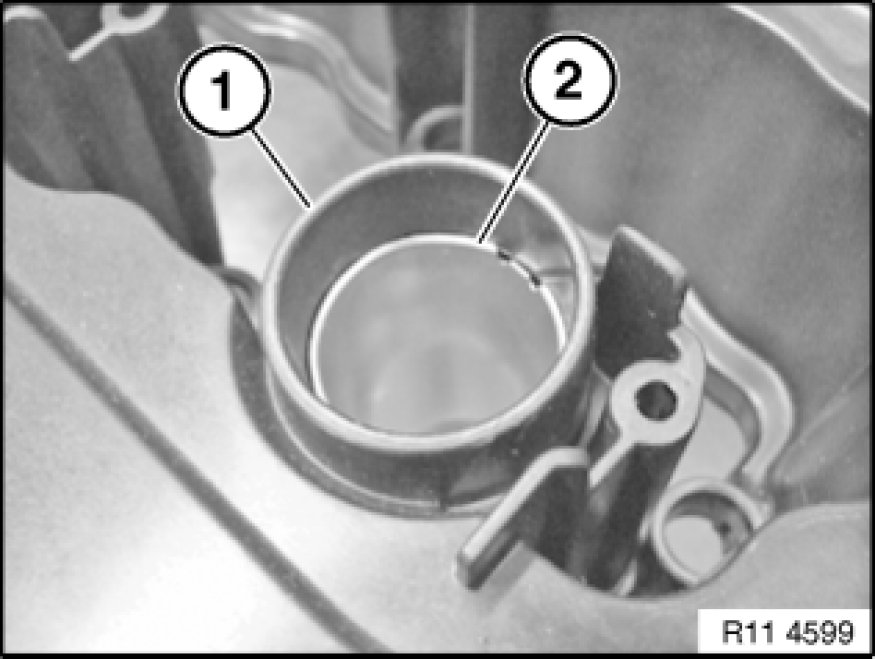

Valve Cover: Service and Repair
11 12 000 - Removing and installing/sealing cylinder head cover (N52K)

Important!
Aluminium-magnesium materials.
No steel screws/bolts may be used due to the threat of electrochemical corrosion.
A magnesium crankcase requires aluminium screws/bolts exclusively.
Aluminium screws/bolts must be replaced each time they are released.
Aluminium screws/bolts are permitted with and without
color coding (blue).
For reliable identification:
Aluminium screws/bolts are not magnetic.
Jointing torque and angle of rotation must be observed without fail (risk of damage).

Necessary preliminary tasks:
- Remove ignition coils Service and Repair
- Release ignition wiring harness in cylinder head cover area
- Remove tension strut
Unlock and detach vent hose (1).
If necessary, pull off metal bracket (2) in direction of arrow.
Release screws (3) on electric servomotor.
Tightening torque 11 37 3AZ 11 37 Variable Valve Gear.
Note:
A further screw, which cannot be seen in the picture, must be released under the electric servomotor (4).
Release screw on electric servomotor.
Tightening torque 11 37 3AZ 11 37 Variable Valve Gear.
Remove servomotor (4) in direction of arrow.
If necessary, release nuts (5).
Tightening torque 11 72 1AZ 11 72 Air Pump, Lines and Control Valves.
If necessary, remove secondary air valve (6).
Important!
Observe different screw lengths.
Installation location of screws (1 and 2) is specified by the different bushing shapes.
Release screws in area (1).
Tightening torque 11 12 5AZ [1][2]11 12 Cylinder Head with Cover.
Installation Note:
Replace aluminium screws.
Release threaded pin (2).
Tightening torque 11 12 5AZ [1][2]11 12 Cylinder Head with Cover.
Installation Note:
Replace aluminium screws.

Installation Note:
Slotted sleeves (2) for guiding ignition coils in cylinder head cover (1) must be replaced.
Remove slotted sleeves (2).
Installation Note:
Clean all sealing faces (1 and 2).
Important!
Do not use any metal-cutting tools.
Installation Note:
Replace gaskets (1 and 2).

Assemble engine.